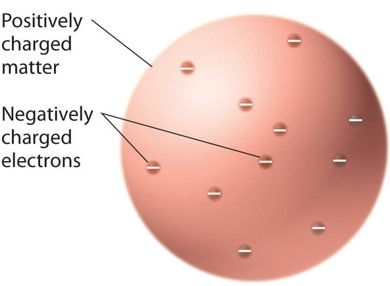
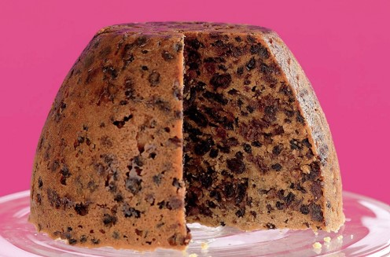
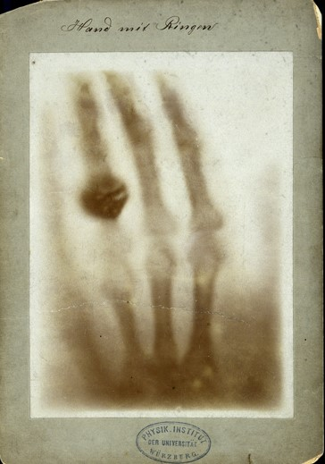
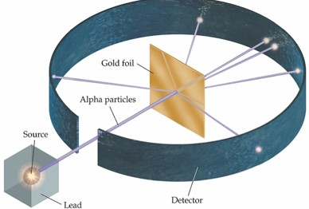
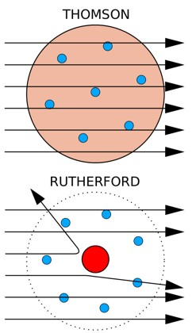
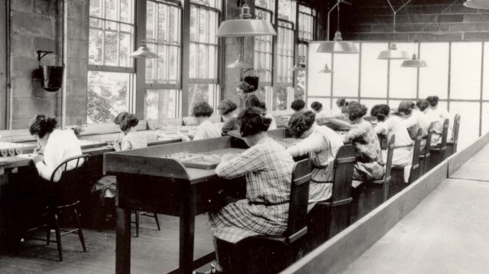

8 Story of Physics
Physics is the study of natural forces in the universe. By studying these forces, we can understand why and how things work the way they do. When we understand matter, energy and the interactions between them, we can then use that knowledge to discover and create new ideas and technologies.
The fundamental ideas of physics underlie all science – astronomy, biology, chemistry and geology – and physics is essential to applied science and engineering.
Experimental physicists design and run careful investigations on a broad range of phenomena in nature, often under conditions which are atypical of our everyday lives.
Theoretical physicists propose and develop models and theories to explain mathematically the results of experimental observations.
Experiment and theory have a broad overlap. Experimental physicists remain keenly aware of the current theoretical work in their fields, while theoretical physicists must know the experimenters’ results and the context in which the results need be interpreted.
8.1 Joseph John (i.e., “JJ”) Thomson
Thomson was born on December 18, 1856, in Cheetham Hill, located just north of Manchester.
In 1876, he studied at Trinity College, Cambridge, obtaining his BA in mathematics in 1880, and MA (with Adams Prize) in 1883. In 1884 he became Cavendish Professor of Physics, succeeding Lord Rayleigh.
“I regard the atom as containing a large number of smaller bodies which I will call corpuscles; … In the normal atom, this assemblage of corpuscles forms a system which is electrically neutral. Though the individual corpuscles behave like negative ions, yet when they are assembled in a neutral atom the negative effect is balanced by something which causes the space through which the corpuscles are spread to act as if it had a charge of positive electricity equal in amount to the sum of the negative charges on the corpuscles.”
– JJ Thomson on the Plum Pudding Model (1899)
He discovered the electron in 1897. He was also a gifted teacher, and seven of his research assistants and his son won Nobel Prizes in physics.
8.1.1 Corpuscles and Thomson’s Plum Pudding Model
Thomson posited something which behaves as if it had a positive charge.
But he was certain about the overall system, namely the atom is a spatial domain filled with numerous negative corpuscles whose total charge is neutralised somehow by the spatial positive electrification.
Between 1904 and about 1910, Thomson’s model of the atom was generally accepted as the best available atomic theory.
It became popularly known as the plum-pudding atomic model.

Despite its name, this pudding contains raisins rather than plums. According to Thomson’s theory of 1906, the electrons revolve on rings about the centre of the atom.
8.1.2 Electrons
The electron is the lightest stable subatomic particle known. It carries a negative charge which is considered the basic charge of electricity.
An electron is nearly massless. It has a rest mass of \(9.1 \times 10^{-28}\) gram, which is only 0.0005 the mass of a proton.
The electron was the first subatomic particle discovered. It was identified in 1897 by J.J. Thomson during investigations of cathode rays. His discovery of electrons, which he initially called corpuscles, played a pivotal role in revolutionizing knowledge of atomic structure.
8.2 Wilhelm Röntgen
Wilhelm Conrad Röntgen was born on 27 March 1845, at Lennep in the Lower Rhine Province of Germany. Röntgen, professor of physics at the University of Wurzburg, discovered X-rays while experimenting with high-voltage electricity.
Working in his darkened lab, he sent an electric current through a cathode ray vacuum tube. Out of the corner of his eye, he glimpsed a bright, greenish-yellow glow on a piece of paper on a nearby bench. He concluded that a new type of ray was being emitted from the tube.

Röntgen found that the new ray could pass through most substances casting shadows of solid objects. He also discovered that the ray could pass through the tissue of humans, but not bones and metal objects.
One of Röntgen’s first experiments late in 1895 was a film of the hand of his wife, Anna Bertha. (Hands were a popular subject of early X-rays.)
Schuster recognised the medical value of X-rays.
The potential medical applications are why Röntgen decided not to patent X-rays.
Early X-rays were called:
- Radiographs
- Roentgenograms
- Roentgenographs
X-rays quickly proved useful as a diagnostic and therapeutic tool as it allowed physicians their first look inside the body without surgery.
8.2.1 First Dental X-Ray
Fourteen days after Röntgen’s first publication on X-ray (28 December 1895), Otto Walkhoff captured the first dental X-ray of his own teeth. He asked Fritz Giesel, a professor of physics to assist him – he experienced a 25-minute exposure.
“I felt tremendously happy when I saw the results. It was when I weighed up the importance of Röntgen’s discovery for future dentistry.”
– Fritz Giesel
Fritz Giesel eventually lost his hair. Today, the exposure to X-ray in in the order of milliseconds.
In the early days of X-ray, the exposure of 25 to 30 minutes. Patients suffered the after effects of the exposure in the following forms:
loss of hair, skin burn, skin blisters, fingernail growth stopped, bloodshot eyes, impaired vision, dermatitis, itching of the skin, basal cell carcinoma, metastatic carcinoma.
8.2.2 Émil Herman Grubbé
In 1896, barely a year after Röntgen had discovered his X-rays, a 21-year-old Chicago medical student, Emil Grubbé, had the inspired notion of using X-rays to treat cancer.
Grubbé had worked in a factory in Chicago that produced X-ray tubes, and he had built a crude version of a tube for his own experiments.
Having encountered X-ray, exposed factory workers with peeling skin and nails – his own hands had also become chapped and swollen from repeated exposures – Grubbé extended the logic of this cell death to tumours.
In 1896, in a tube factory in Chicago, Grubbé began to bombard Rose Lee, and elderly woman with breast cancer, with radiation, using an improvised X-ray tube.
Lee’s cancer had relapsed after a mastectomy, and the tumour had exploded into a painful mass in her breast.
The tumour ulcerated, tightened, and shrank, producing the first response in the history of X-ray therapy. A few months after her initial treatment, the cancer metastasized to her spine, brain and liver.
X-rays could only be used to treat cancer locally, with little effect on tumours that had already metastasized.
A new branch of cancer medicine, radiation oncology, was born. Grubbé succumbed to the deadly effects of chronic radiation. By the mid-1940s, his fingers had been amputated one-by-one to remove necrotic and gangrenous bones, and his face was cut up in repeated operations to remove radiation-induced tumours and premalignant warts. In 1960, he died in Chicago, with multiple forms of cancer that had spread throughout his body.
8.3 Ernest Rutherford
Ernest Rutherford was born on August 30, 1871 at a small town called Bridgewater near Nelson in New Zealand’s South Island.
he was able to win another scholarship to study from 1890 to 1894 and joined Canterbury College of the University of New Zealand in Christchurch.
He got his bachelors degree in 1892 and masters degree in 1893.
At this point Rutherford set his eyes on getting a scholarship of the Royal Commissioners for the Exhibition of 1851, which would enable him to study anywhere in the British-ruled countries.
This was not easy as only one scholarship was given every two years to a New Zealand student who had to be on the roll in the University at the time of applying for it.
Therefore Rutherford went back to Canterbury College in 1894 and completed BSc degree with geology, chemistry and some research work.
Rutherford decided to work with J.J. Thomson, who was then the Director of Cavendish Laboratory at Cambridge University.
Rutherford left New Zealand in 1895 and joined J.J. Thomson. He became the first non-Cambridge graduate to be admitted for PhD at Cambridge University.
Rutherford discovered alpha and beta rays in 1898.
Rutherford accepted an invitation to the Macdonald Chair of Physics (1898-1907) at McGill University in Montreal, Canada, and moved there without completing the PhD degree.
8.3.1 Discovering Half-Lives
Working with Frederick Soddy in 1902-03, Rutherford identified the phenomenon of radioactive half-life and formulated the still-accepted explanation of radioactivity: each decay of the atoms of radioactive materials signifies the transmutation of a parent element into a daughter, with each type of atom having its own transformation period.
A succession of such transformations forms a radioactive series.
8.3.2 Geiger-Marsden Experiments

These experiments provided the first experimental evidence that led to the discovery of the nucleus of the atom as a small, dense, and positively charged atomic core. The discovery involved a series of experiments performed by Hans Geiger and Ernest Marsden under Ernest Rutherford.
With Geiger and Marsden’s experimental evidence, Rutherford deduced a model of the atom, discovering the atomic nucleus. His “Rutherford Model” (or solar system model, or planetary model), outlining a tiny positively charged atomic centre surrounded by orbiting electrons, was a pivotal scientific discovery revealing the structure of the atoms that comprise all the matter in the universe.
8.3.3 Atom Interior
The experimental evidence involved the scattering of a particle beam after passing through a thin gold foil obstruction. The particles used for the experiment – alpha particles – are positive, dense, and can be emitted by a radioactive source.
Ernest Rutherford discovered the alpha particle as a positive radioactive emission in 1899. As these alpha particles have a significant positive charge, any significant potential interference would have to be caused by a large concentration of electrostatic force somewhere in the structure of the atom.

The scattering of an 𝛼-particle beam should have been impossible according to the plum pudding model of the atom. This model held that atoms were comprised of a sphere of positive electric charge dotted by the presence of negatively charged electrons.
This model lacked the presence of any significant concentration of electromagnetic force that could tangibly affect any alpha particles passing through atoms. As such, α-particles should show no signs of scattering when passing through thin matter.
8.3.3.1 Explanations
The alpha particles had run into huge concentrations of positive charge and were repelled. Rutherford explained that the atom composed almost entirely of empty space. It had no solid boundary and its outer limits were defined only by the movement of its outermost electrons, while at the centre lay the atomic nucleus.
“…It was as if you fired a 15-inch naval shell at a piece of tissue paper and it came back and hit you. I realised that this scattering backwards must be the result of a single collision, and when I made calculations I saw that it was impossible to get anything of that order of magnitude unless you took a system in which the mass of the atom was concentrated in a minute nucleus”
– Rutherford’s Explanation
In relation to the atom, the nucleus was a mere speck in a cavernous void. The nucleus is so small that only 1 particle in 8000 would collide with it. It was like a fly in a cathedral.
8.3.4 In the Cavendish Laboratory
After the war, in 1919, Rutherford moved to Cambridge University, succeeding J.J. Thomson, as Cavendish Professor of Physics and the Director of the Cavendish Laboratory. Soon, he found that nuclei can be disintegrated artificially by bombarding with alpha particles, and thus cause transmutations. By this means he converted nitrogen nuclei into oxygen nuclei.
“He (Rutherford) had … a volcanic energy, interest, enthusiasm and an immense capacity for work. He had the most astonishing insight into physical processes, and in a few remarks he would illuminate a whole subject. There is a stock phrase-‘to throw light on a subject’. This is exactly what Rutherford did. To work with him was a continual joy and wonder. He seemed to know the answer before the experiment was made, and was ready to push on the irresistible urge to the next. (He was nicknamed ‘crocodile’, which cannot turn its head…must always go forward with all devouring jaws open.) He was indeed a pioneer – the word he often used – at his best exploring an unknown country, pointing out the really important features and leaving the rest for others to survey at leisure. He was, in my opinion, the greatest experimental physicist since Faraday.
In appearance Rutherford was more like a successful businessman or Dominion farmer than a scholar … he was of massive build, had a moustache and a ruddy complexion. He wore lose, rather baggy clothes, except on formal occasions. A little under six feet in height, he was noticeable but by no means impressive. It seemed impossible for Rutherford to speak softly.
His whisper could be heard all over the room, and in any company he dominated through the sheer volume and nature of his voice, which remained tinged with antipodean flavour despite his many years in Canada and England. His laughter was equally formidable. Rutherford would not hesitate making fun of the Nobel Committee decision to choose him for the Chemistry Prize instead of the Physics Prize.”
– James Chadwick on Ernest Rutherford
He won the 1908 Nobel Prize in Chemistry for his “investigations into the disintegration of the elements, and the chemistry of radioactive substances.”
8.3.5 Rutherford’s Death
Rutherford died on 19 October 1937 in Cambridge. His ashes were buried in Westminster Abbey close to the tombs of Sir Isaac Newton and Lord Kelvin.
8.4 The Curies
“Sometimes, I had to spend a whole day mixing a boiling mass with a heavy iron rod nearly as large as myself. I would be broken with fatigue at the day’s end. Other days, on the contrary, the work would be a most minute and delicate fractional crystallization, in the effort to concentrate the radium.
Our precious products … were arranged on tables and boards; from all sides we could see their slightly luminous silhouettes, and these gleamings, which seemed suspended in the darkness, stirred us with ever new emotion and enchantment.”
– Marie Curie in her autobiography
Awarded a combined total of six Nobel Prizes, the celebrated Curie family’s collective work and momentous achievements alone make their lives fascinating. But the lesser-known side of their story includes the controversy, the drama, the scandal, and the tragedy that surrounds them.
Now, the first full-scale biography of the Curies provides a well-rounded, honest look at both the private and professional lives of the world’s most gifted scientific family.
8.4.1 Pierre Curie
Pierre was born in Paris on 15 May 1859. He was the second son of Eugène Curie and Sophie Claire Depouilly (his elder brother was Jacques).
His grandfather, Paul François Curie, had been a surgeon in the Military Hospital of Paris. Disenchanted with conventional medicine, he pioneered a new system of healing, called homeopathy, writing a book about it, entitled, Practice of Homeopathy.
His father, Eugène Curie was a doctor. His mother, Sophie Claire Depouilly was the daughter of a once wealthy cloth manufacturer in Puteaux.
Pierre’s parents, and later, his brother, taught him at home. Throughout the elementary and high school years, they gave him a grounding in biology, chemistry, physics and geometry. He made up for his lack of schooling in literature and history by reading many of the books in his father’s large library. Pierre could only learn a subject thoroughly by intense concentration, which he found impossible in a disturbing environment.
When Pierre was fourteen, his father realised that he was exceptional at math, especially spatial geometry, and hired Professor Albert Bazille to teach him advanced mathematics.
Bazille inspired him to such intense effort that despite his early casual home schooling, he matriculated at the prestigious Sorbonne at 16. There, in just two years, he got a degree in physics. Then at 18, because his financial help was needed at home, instead of pursuing a doctorate, he began to work as a physics lab assistant at the Sorbonne. Jacques was already employed as an assistant in the mineralogy department.
As a pacifist, having seen the horrors of war, Pierre avoided military service by agreeing to spend ten years working in public education – something he had already started to do as a lab assistant. He liked reading novels. Pierre and Jacques already knew that crystals heated in a fire attracted ash and wood to their surfaces like magnets.
Kelvin had also discovered that when certain crystals were heated, they generated electricity – this was known as pyroelectricity. The two brothers proved that pressure on some crystals had the same effect.
8.4.2 Discovering the Piezoelectric Effect
Jacques and Pierre Curie announced their discovery of the piezoelectric (from the Greek piezine, ‘to press’) effect to the French Academy of Science on 2 August 1880. Today, piezoelectric devices are ubiquitous. E.g., all quartz watches and clocks are based on piezoelectricity.
“Their experiment led the two young physicists to a great success: the discovery of the hitherto unknown piezoelectricity, […]. This was by no means a chance discovery. It was the result of much reflection on the symmetry of crystalline matter which enabled the brothers to foresee the possibility of such polarization. […] With experimentation rare for their age, the young men succeeded in making a complete study of the new phenomenon, established the conditions of symmetry necessary to its production in crystals, and state its remarkably simple quantitative laws, as well as its absolute magnitude for certain crystals.”
– Marie Curie
The use of the phenomenon outside the laboratory began 35 years after its discovery during the first world war, in a search for a device to detect German submarines. The sonar, the product of this research, was put into use only after the war had ended.
8.4.3 Marie Salomea Sklodowska
Marie was born in Warsaw on 7 November 1867. Her parents, Vladislav and Bronislava, already had three daughters (Sophie, Bronia and Hela) and a son (Joseph). They grew up in a police state under the autocratic Russian Czar Alexander II. He was determined to enslave the intellectual and middle-class Poles who had opposed his rule, and to eradicate their language, culture, and history. Russian became the official language, Russian officials and teachers replaced the Poles, and Poland disappeared from maps to reappear as Vistula Land or Vistula Country. She danced joyfully in the classroom after hearing that Czar Alexander II had been killed by an assassin on 13 March 1881.
Marie’s father was a professor and assistant principal of a boy’s school, taught physics and mathematics, which he loved. Her mother was a headmistress and director of a prestigious girls’ boarding school.
He established a boys’ boarding school in the family home, taking in two or three boarders at first, then five, eight, ten. He gave lodging, food, and private instruction to these young boys, chosen from among his pupils. The house was transformed into a noisy barracks and intimacy vanished from family life.
When Marie was nine, one of the boarders caught typhus and 14-year-old Sophie was infected with the disease, which killed her. Marie was stunned by the death of her brilliant and high-spirited sister.
At ten, Marie left home to attend a private boarding school. Her teacher Mlle Antonina Tupalska, who doted on her, taught Polish history in Polish – a practice forbidden by the Russian authorities. Although Marie was two years younger than most of her 24 classmates, she beat them all in history, literature, German, and French.
8.4.4 Marie as a Governess
After a year, Marie decided to leave home to be a governess in a lawyer’s family. It was a bad experience for her as she did not get along well with the wife.
Bronia wanted to study medicine in Paris, and raised enough money for the journey and tuition. But when she reached Paris, she hadn’t enough money to survive on even in the inexpensive Latin Quarter. Marie, too, wanted to study in Paris, and so they made an agreement. Marie would accept another job, also as a governess. From her salary, she promised to subsidize Bronia until she graduated and got a job as a doctor. Then the roles would be reversed.
“Today we had another scene because she did not want to get up at the usual hour. In the end, I was obliged to take her calmly by the hand and pull her out of bed. I was boiling inside. You can’t imagine what such little things do to me: such a piece of nonsense can make me ill for several hours. Bur I had to get the better of her.”
– Marie Curie
Her experience in the Zorawski house was much better. Most evenings were devoted to her own studies – literature and sociology – but eventually, she decided that if she ever got to Paris she would focus on mathematics and physics.
8.4.5 Casimir Zorawski
Marie fell in love with Casimir Zorawski, the eldest son of her employers. He asked her to marry him, and she expected his family to be pleased. But when Casimir asked for his parents’ approval to marry Marie, his parents disapproved. The idea of their son marrying a poor working woman was intolerable. In one instant, the social barriers went up, insurmountable.
The fact that Marie was of good family, that she was cultivated, brilliant, and of irreproachable reputation, the fact that her father was honourably known in Warsaw – none of that counted. One does not marry a governess!
“If men don’t want to marry poor young girls, then let them go to the devil!”
– Marie to Joseph in writing
Subjected to his parents’ disapproval, Casimir did not fight for the woman he loved. Heartbroken and humiliated, Marie wanted to leave immediately, but she remembered the pact she made with her sister – to send almost half her salary to support Bronia’s studies in Paris. So she continued on as the family’s governess, trying hard to hide her anger and bitter disappointment.
“Everybody says I have changed a great deal, physically and spiritually, during my stay in Szczuki. This is not surprising. I was barely eighteen when I came here and what have I not been through! There have been moments which I shall certainly count among the most cruel of my life. I feel everything very violently, with a physical violence, and then I give myself a shaking, the vigor of my nature conquers, and it seems to me that I am coming out of a nightmare […] First principle: never to let one’s self be beaten down by persons or events. I count the hours and days that separate me from the holidays and my departure to my own people. There is also the need of new impressions, of change, or movement and life, which seizes me sometimes with such force that I want to fling myself into the greatest follies, if only to keep my life from being eternally the same. Fortunately, I have so much work to do that these attacks seize me pretty rarely.”
– Marie to Henrietta in writing
8.4.6 Improving Finances
On the home front, there were developments. Her father took on a job as director of a reform school near Warsaw. It paid well, and he was able to help Bronia and Marie.
Bronia told their father that she could live on 32 rubles a month and to save eight of the forty he usually sent her, and give to Marie instead, which he did. For the first time, Marie was able to save toward her future life in France.
In July 1890, Marie left the Zorawskys, and began planning for her own future. Her next job was with the Fuchs family.
“I dreamed of Paris as of redemption, but the hope of going there left me a long time ago. And now that the possibility is offered to me, I do not know what to do … I am afraid to speak of it to Father. I believe our plan of living together next year is close to his heart, and he clings to it; I want to give him a little happiness in his old age. And on the other hand my heart breaks when I think of ruining my abilities, which must have been worth something.”
– Marie in writing
Marie had worked for less than a year when Bronia informed her that they would soon graduate as doctors, after which they intended to marry. If Marie could save a few hundred rubles to pay for her fees at the Sorbonne, she could then live with them for free, meals included.
8.4.7 Marie’s Third Job as a Governess
“Marie has a secret about her future, of which she is to speak to me at length … To tell you the truth, I can well imagine what it has to do with, and I don’t myself know whether I should be glad or sorry. If my foresight is accurate, the same disappointments, coming from the same person who have already caused them to her, are awaiting her. And yet if it is a question of building a life according to her own feeling, and of making two people happy, that is worth the trouble of facing them perhaps. Your invitation to Paris, which fell upon her in such unexpected fashion, has given her a fever and added to her disorder … If she does not come back to me completely cured, I should oppose her departure, because of the hard conditions she would find herself in during the winter in Paris … without ever mentioning the fact that it would be very painful for me to separate from her, but this consideration is obviously secondary. I learned with great joy that Casimir (Bronia’s husband) is doing well . How funny it would be if each of you had a Casimir.”
– Letter from father to Bronia.
During their walks in the mountains, Casimir merely repeated that he could not overcome his snobbish parents’ opposition. And Marie made the final break with her parting shot, telling him that if he couldn’t resolve the problem, it was not for her to teach him how to do it.
“It would restore me spiritually after the cruel trials I have been through this summer which will have an influence on my whole life … I am so nervous at the prospect of my departure that I cant speak of anything else until I get your answer … I promise that I shall not be a bore or create disorder. I implore you to answer me, but very frankly.”
– Marie Curie
As Casimir was a lost cause, Marie wrote to Bronia (now married and pregnant) telling her that she would join her in Paris if her sister could feed her without depriving herself.
8.4.8 Inadequate Academic Grounding
Bronia and her husband were at Gare du Nord to receive Marie when she arrived in Paris. She began her studies at the Sorbonne’s Faculty of Sciences on 3 November 1891, one of only 23 women among 1,825 students. Men outnumbered women almost a hundred to one.
To her dismay, her French failed her when a professor spoke quickly, and she could not grasp entire sentences. In addition, the physics and mathematics she had studied alone or in correspondence with her father was not up to the standard of her classmates education in French schools.
Marie took her physics exam in July 1893, and got the highest score.
Never before in the history of the Sorbonne, had a woman, and a foreigner, top the physics class. Marie was eager to return to the Sorbonne to get a master’s degree in math. But her savings were exhausted, her father had already sacrificed too much, and Bronia, with a young child, couldn’t be expected to extend their help for another year.
The Alexandrovitch Scholarship Fund came to the rescue with 600 rubles, enough to support her in Paris until she got a math degree.
8.4.9 Meeting Pierre
“Marie was hired by the Society for the Encouragement of National Industries to test the magnetic properties of various steels. But the Sorbonne’s crowded physics lab hadn’t room for the equipment she needed for the tests. A friend, Professor Kowalski, who had known her since her days as a governess in Poland invited her to meet someone he thought could help her.”
-– Pierre Curie.
After meeting at Joseph Kowalski’s apartment, they met again at the French Society of Physics, and at his lab.
Pierre completed his doctoral thesis in March 1895, titled “Magnetic Properties of Bodies at Diverse Temperatures”. After this, he persuaded Marie to marry him.
The were married on 26 July 1895 at Sceaux’s town hall. On 12 September 1897, Dr. Eugene Curie delivered Irène Curie. Late in 1897, Marie decided not to seek a teaching job right away, but to study for a doctorate. If successful, she would be the first woman in France, and possible the whole of Europe, with a Ph.D. in physics.
8.4.10 PhD Topics
The Curies agreed that a fundamental study of the nature of uranium would be an engrossing subject for Marie’s PhD thesis. Professor Gabriel Lippman delivered her first paper on her research at the weekly meeting of the French Academy of Sciences, on 12 April 1898, titled, “Rays Emitted by Compounds of Uranium and of Thorium”.
Marie was intrigued by the erratic results from testing pitchblende. She found that its radioactivity was four times more intense that justified by its uranium content. She repeated her experiment 20 times, but got the same results.
She suspected that she had found a new element.
“The radiation from pitchblende that I couldn’t explain comes from a new chemical element. The element is there and I’ve got to find it. We are sure!”
– Marie in writing to Bronia
At last, she found an element 150 more active that uranium. She called it polonium, after Poland. Henri Becquerel presented their report to the Academy, “On a New Radioactive Substance Contained in Pitchblende.”
Impressed by Marie’s research, the Academy of Sciences awarded her the Gegner Prize, but because its member were male chauvinists, did not tell her.
Instead, Pierre was asked to inform her that she had won the prize and with it, three thousand eight hundred francs. From barium, they isolated an element which was 900 more radioactive than uranium. They named this project radium. To isolate radium, they had to work with several tons of pitchblende from a mine in Jachomov (Czech Republic).
Pitchblende is one of the most complex minerals, containing up to 30 different elements, combined in a great variety of ways. In addition, the Curies were not trained chemists – yet they were not discouraged.
8.4.11 Finding Actinium
While working on pitchblende in 1899, André-Louis Debierne discovered actinium, a rare, highly radioactive silvery-white metal that also glowed blue in the dark.
Scientists began to notice the effects of radioactive material. They gave a glass tube of radioactive barium to Becquerel, who kept it in his waistcoat for about six hours. This caused a burn on his skin the shape of the glass tube. Yet he felt no burning sensation.
When young chemist Bertrand Goldschmidt arrived for an interview in June 1933, she told him in a strong Polish accent, ‘for a year or two, you will be my slave in chemistry and do everything for me’.
He was in awe of this ‘rather small old lady with big hairs on her chin, who looked much older than her sixty-five years’.
He was fascinated by the stories still circulating of a once-active love-life. There were ‘many rumours’, including that Eve Curie, born in 1904, and with her blue eyes and dark hair so different from her older, fairer sister, was not Pierre Curie’s daughter, ‘but André Debierne’s’.
8.4.12 Dangers of Radioactivity
“If one leaves a small glass ampulla with several centigrams of radium salt in one’s pocket for a few hours, one will feel absolutely nothing. But in 15 days afterwards redness will appear on the epidermis, and then a sore, which will be very difficult to heal. A more prolonged action could lead to paralysis and death.”
– Pierre Curie in his Nobel Prize Lecture
Pierre personally confirmed the possibly dangerous effect by intentionally inducing a burn on his own arm with radioactive barium. It took fifty-two days to heal, leaving a gray spot he believed indicated a deeper injury. Both he and Marie had already noticed that handling containers of radioactive material caused their fingertips to become hard and painful for as long as two months. It was clear that radium was a health hazard.
Doctors started to experiment with radium. It reduced their patients’ tumours, lesions, and some kinds of cancer. This radium treatment became known as Curie-therapy.
8.4.13 The Spirit World
Pierre and Jacques had already been interested in the paranormal. This interest was fuelled by their friendship with William Crookes, an independently wealthy British chemist.
In 1905, Pierre renewed his interest in the supernatural. He once told Marie that he thought that some aspects of spiritualistic phenomena “touch closely on physics.” On 24 July, he persuaded Marie to attend a demonstration by Italian medium, Eusapia Palladino, an “ignorant, invalid woman of thirty who apparently is capable of defying natural laws. She floated in the air as if flying on a couch, then slowly descended to the floor.
On 17 April 2010, Palladino was exposed as a fraud during a séance in New York – at that séance, two men in black tights crawled under the chairs in the darkness and caught her trying to lift a table with her foot.
She angrily told the investigators that it was up to them to stop her from cheating, her usual response after being caught in the act.
The dean of the University of Geneva attempted Pierre with an offer of an idyllic life in the Swiss mountains, his own laboratory equipped with anything he wanted, two full-time assistants, a generous salary of ten thousand francs, and an allowance for his residence. Marie was also promised an undefined position in the university.
They visited the university and were impressed. Their current income, augmented by grants and prize money, were not even enough to meet their frugal lifestyle. This offer would solve their financial problems.
8.4.13.1 A Counteroffer from France
Henri Poincare pulled strings, and Pierre was offered a minor teaching position at the School of Physics, Chemistry and Natural Science. Marie was offered a part-time teaching position at the Sevres, a teachers college for women in a Paris suburb.
They then rejected the Swiss offer, deciding that it would disrupt and delay their work on radium. Instead, they accepted the teaching positions, although that too, would delay their research (but not as badly).
Marie’s early classes were a disaster! The students ridiculed her Polish accent.
8.4.14 Radiation
‘…radioactivity “seemed to violate the first law of thermodynamics, i.e., energy can be converted from one form to another but cannot be created of destroyed.”’
– the Curies
In 1900, the Curies produced a detailed report on radioactive substances for the International Congress of Physics, held in Paris.
“One may also imagine that in criminal hands radium may become very dangerous, and here we may ask ourselves if humanity has anything to gain by learning the secrets of nature, if it is ripe enough to profit by them, or if this knowledge is not harmful. One example of Nobel’s discoveries is characteristic: power explosives have permitted men to perform admirable work. They are also a terrible means of destruction in the hands of the great criminals who lead the peoples towards war. I am among those who think, with Nobel, that humanity will obtain more good than evil from the new discoveries.”
– Pierre Curie
In 1901, they wrote a joint paper with Debierne, “On Induced Radioactivity and the Gas Activated by Radium”.
They mentioned “the deplorable situation in the lab, where everything has become radioactive. This does not seem to us to be explained by the direct radiation of radioactive dust spread about the lab. It is probably due … to the continual formation of radioactive gas.”
Pierre was able to show that this gas was largely responsible for radium’s intense radiation.
8.4.14.1 Competition in Research
“I have to publish my present work as rapidly as possible in order to keep in the race. The best sprinters in this road of investigation are Becquerel and the Curies in Paris, who have done a great deal of very important work in the subject of radioactive bodies during the last few years.”
– Ernest Rutherford
On 28 March 1902, they produced enough pure radium, and brought it to Eugene Demarcay, asking him to weigh it. The atomic weight was found to be 225.93, remarkably close to today’s value of 226. This was the evidence that was needed.
“Their discovery of radium opened the doors to twentieth-century physics. Scientists now had a powerful source of radiation. Its study would enable them to witness for the first time the manifestation of atomic energy. Radium was the key to unlock the mystery of the composition of the universe, for it would help them explore and understand the structure of the atom, the base of all matter on earth.”
– Pflaum
“It may have an importance for the future of civilization comparable to that which allowed man to discover the power of fire.”
– Paul Langevin
It had taken them four exhausting years to produce, a process they had expected to take a few weeks!
Marie’s father congratulated her, but expressed his disappointment that the work seemed to have no practical value!
The Curies could have become rich by patenting the process of producing radium. Factories were already preparing to exploit it, but they decided to give it to the world. They had discussed how the prospective money could provide for Irene’s future, making their life easier, and allow them to build the laboratory of Pierre’s dreams. But they decided that taking financial advantage of their discovery was against the scientific spirit, especially as radium might be used to fight disease. Consequently, one Sunday morning, Pierre wrote to the American engineers who had asked for details about radium production and gave them all the answers.
Thirty-six year old Marie, three months pregnant with her second child, defended her dissertation on radium at the Sorbonne. Bronia, Pierre and his father were there. Close friends like Kean Perrin and Paul Langevin was also there. Gabriel Lippmann, Henri Moissan, Edmond Bouty.
8.4.14.1.1 Marie’s Miscarriage
“Write to me, I beg of you, if you think I should blame this on general fatigue – for I must admit that I have not spared my strength … and I regret this bitterly, as I have paid dearly for it. The child – a little girl – was in good condition and was living. And I had wanted it so badly.”
– Marie in writing
In early August 1903, during the fifth month of her pregnancy and while vacationing at Saint-Trojan, Marie miscarried and was devastated. She wrote to Bronia: I had grown so accustomed to the idea of the child that I am absolutely desperate and cannot be consoled.
8.4.15 Nomination for Nobel Prize
Pierre and Marie had been nominated by the French pathologist Charles Bouchard for the physics prize the first year it was awarded, 1901. That year, it was awarded to Röntgen.
The following year, they were nominated again, but it went to Dutch physicists, Hendrik Lorenz and Peter Zeeman.
In 1903, they were told they were on the shortlist for the Nobel Prize.
There was an attempt to prevent Marie from getting the Nobel Prize. In researching the early history of the Nobel Institution, Elisabeth Crawford found that Gabriel Lippman, Jean-Gaston Darboux, Eleuthere Mascart and Henri Poincare, all members of the French Academy of Sciences, had signed a joint letter to the Nobel Prize selection committee.
In it, they credited Pierre Curie alone with isolating polonium and radium and described Pierre and Becquerel as competing with foreign rivals for the radium supply and obtaining the “precious material” with great difficulty.
They had concluded that because Pierre and Becquerel had studied together it was impossible “for us to separate the names of two physicists and therefore we do not hesitate to propose that the Nobel Prize be shared between Mr. Becquerel and Mr. Curie.
Lippmann and Poincare knew that Marie and Pierre had isolated polonium and radium as a team, with her, in the lead.
Magnus Mittag-Leffler, Swedish mathematician and a member of the Nobel Prize nominating committee came to her rescue when he learnt of the plot against her.
The Nobel committee agreed to split the 1903 prize three ways, between Becquerel and both Curies. The plot to exclude Marie was foiled. They were informed on 14 November 1903.
But radioactivity research involved both physics and chemistry. For which category should the award be given? The committee finally decided on physics, leaving open the possibility of a future Nobel Prize in chemistry in connection with radioactivity. This is how Marie Curie became the only woman scientist ever to win two Nobel Prizes, and for almost the same work!
As Marie was too ill, and Pierre had teaching commitments, the did not attend the ceremony in Stockholm on December 10. The King of Sweden handed the medal to their representative, French minister Jean-Baptiste Marchand. The president of the Swedish Academy of Sciences summarised the work of Becquerel and the Curies.
The response of Le Figaro was to admonish the French people for not knowing who their great scientists were, and for leaving it to foreigners to discover them.
The Nobel prize money arrived on 2 January 1904, and allowed Pierre to follow a less rigorous schedule. Though Marie continued to teach at Sevres, which she enjoyed, she insisted that Pierre quit his onerous teaching chose at the School of Physics and Chemistry. He was replaced by his friend and former student, Paul Langevin.
Marie lent 20,000 francs to Bronia to sustain their tuberculosis sanatorium. She paid for Mme Mozlovka’s visit to her birthplace, Dieppe. Mme Mozlovka was Marie’s childhood teacher. Who had long dreamed of revisiting her birthplace.
8.4.15.1 Second Nobel Prize
Sick, worn, and worried, Marie Curie made the exhausting forty-eight-hour journey to Sweden, comforted by the presence of her sister Bronia and daughter, Irene. On 11 December 1911, Marie delivered her Nobel lecture titled, “Radium and the New Concepts in Chemistry”.
Far from being defeated, Marie was acclaimed and revered throughout the rest of the world as a unique two-time Nobel Prize winner. She continued to lecture at the Sorbonne and to work in her laboratory. And all her friends, including Langevin, stuck with her.
8.4.16 International Fame
A day after the ceremonies, a desperate Marie write to her brother that they had been overwhelmed by hordes of photographers and journalists, and “would like to dig into the ground somewhere to find a little space.”
In addition to journalists, eccentrics, inventors, beggars, autograph-hunters, and “snobs, worldly people and sometimes scientists have come to see us in the magnificent setting of rue Lhomond.”
“With all this there is not a moment of tranquillity in the laboratory and a voluminous correspondence to be sent off every night. On this regime I can feel myself being overwhelmed by brute stupidity.”
8.4.17 Marie’s Working Conditions
“At my earnest request, I was shown the laboratory where radium had been discovered shortly before …. It was a cross between a stable and a potato shed, and if I had not seen the worktable and items of chemical apparatus, I would have thought that I was been played a practical joke.”
– Friedrich Wilhelm Ostwald
With the press publicising the Curies’ miserable working conditions in their cold, leaky, and ramshackle shed, the French government was shamed into creating a new professorship in physics for Pierre at the Sorbonne, with Marie as its laboratory chief and giving them two assistants.
In fact, there was no laboratory until eight years after Pierre’s death – just a room shared with medical students and other researchers. Marie said, “One of the best French scientists never had a suitable laboratory at his disposition although his genius had been revealed from the age of twenty.”
8.4.18 Loie Fuller
The Curies were friends with Loie Fuller, who was a dancer. Fuller admired the Curies, but also needed their expert advice. She had read that radium was luminous and planned to dance as a butterfly with the wings painted with radium.
When she asked the Curies about it, they warned her that it was dangerous, Undaunted, she experimented with phosphorescent salts, until an explosion blew off her eyebrows and eyelashes. Only then did Fuller give up the idea. Through Fuller, the Curies met Auguste Rodin.
8.4.19 Pierre’s Death and Marie’s Future
“We kissed your cold face for the last time. Then a few periwinkles from the garden on the coffin and the little picture of me that you called “the good little student” that you loved…. Your coffin was closed and I could see you no more…. They came to get you, a sad company; I looked at them, and did not speak to them. We took you back to Sceaux, and we saw you go down into the big deep hole.
Then the dreadful procession of people. They wanted to take us away. Jacques and I resisted. We wanted to see everything to the end. They filled the grave and put sheaves of flowers on it. Everything is over. Pierre is sleeping his last sleep beneath the earth; it is the end of everything, everything, everything.”
– Marie Curie in Writing
After working in the laboratory all morning, he braved the heavy rain, umbrella in hand, and travelled across Paris to his luncheon meeting. There he spoke forcefully on a number of issues that concerned him, including widening career options for junior faculty and drafting legal codes to help prevent laboratory accidents.
After the meeting was over he headed out toward his publisher in the rain, only to find that the doors were locked because of a strike. Hurrying to cross the street, he was run over by a horse-drawn wagon with a load of military uniforms, weighing some six tons. He was killed instantly.
Marie’s indifference towards money did not apply to funding for scientific research. She welcomed the support of Andrew Carnegie, who met her briefly in Paris and donated fifty thousand dollars to help build and staff a laboratory for radioactivity research.
It was also to honour Pierre’smemory and to be known as the Curies Foundation, created by Andrew Carnegie, for which Marie should be in full control. With this new source of funding, Marie recruited a group of young scientists, especially women, to work for her.
In December 1910, Marie competed for membership in the French Academy of Sciences. This attracted press coverage as this would mean that they would have to break the tradition and allow a woman to join.
Most of the members voted to allow a woman to be a candidate and to challenge the two other aspirants – Edouard Branly and Marcel Brillouin. The votes were: Branly, 29, Curie, 28; Brillouin, 1.
Another vote was taken to decide whether a woman should ever be admitted. They voted 90 to 52 to bar them for eternity.
8.4.20 World War I
Determined to play an active role in the war, Marie offered her services to the president of the National Aid Charity, Paul Appell.
There was a critical shortage of X-ray equipment in Paris hospitals. Marie got permission from the War Minister, Alexandre Millerand, to try to solve the problem.
In an exhaustive tour of Paris, she collected unused X-ray equipment from various sources: university laboratories, offices of doctors, patriotic manufacturers of scientific instruments, and delivered them to the city’s hospitals.
On September 2, expecting the city to fall within two days, the French government left for Bordeaux. German troops were within 30 miles of the city when the French government realised Marie’s radium was a national asset, and instructed her to take it to Bordeaux for safety.
She left the radium at the University of Bordeaux’s Faculty of Sciences, and returned to Paris on a military train the next day.
When Marie had taken X-ray equipment to Paris hospitals, she had learned that many wounded soldiers who might have survived were dying because it took too long to get them medical help.
The entire French army had only one mobile X-ray station, and few emergency stations at the battlefront had the electricity needed for X-rays. She transformed ambulances into mobile X-ray stations complete with electric power. A fleet of sixteen X-ray equipped ambulances was formed. To be more self-reliant, Marie learnt to repair as well as to drive the ambulance.
There was an appeal for gold and silver to pay for the war effort, and Marie offered her medals, including the Nobel Prize medal. Her offer was declined.
Then, after discussing it with Irene, she used most of her Nobel Prize money – Irene’s future inheritance – to buy war bonds, knowing that at war’s end they’d probably be worth much less.
Since the spring of 1919, the U.S. Army had been paying Marie $75 a week to teach American army officers waiting to be shipped home how to use X-ray equipment.
Irene’s participation was an appeal for the soldiers, who, according to Marie, “studied with much zeal the practical exercises directed by my daughter.” Despite a lack of makeup, a long-sleeved black smock down to her ankles, and a curt manner, 21-year-old Irene could not conceal her attractive green eyes and obvious intelligence.
8.5 Radium Girls
One application of radium is in radioluminescent paint, invented by William Hammer. Hammer discovered that by mixing the radium with glue and zinc sulfide, he could make glow-in-the-dark paint.
Radioluminescent paint first came into industrial use in 1917 when the Radium Luminous Material Corporation – later known as the United States Radium Corporation – developed a paint known as Undark, which used zinc sulfide crystals and radium salt and was the first radioluminescent paint.
In 1917, the Radium Luminous Material Corporation began producing luminous watch faces and clock dials using Undark in Essex County, New Jersey.

Factory workers wore no protective gear, and were instructed to lick the tip of their paintbrushes to create a fine point (a practice known as “tipping”). While they were assured that the paint was non-toxic, this claim proved to be tragically wrong.
Quick workers could make good money since the pay was determined by the number of dials painted. The best dial could paint about 250 watches a day, making nearly $25 a week.
The paint glowed in the dark because it was laced with a tiny amount of radium.
8.5.1 Amelia Maggia
She and two of her sisters worked as dial painters beginning in late 1917, painting 250 watches a day, and making nearly $25 a week.
The United States had entered World War I in April 1917, and many of the watches painted were destined for the wrists of soldiers on the front lines. Soldiers found wrist watches much more practical than picket watches. Dial painting paid well, and was patriotic!
Amelia developed a toothache, and a tooth extraction did not help. Amelia’s health also began to deteriorate, and she was forced to quit her job in 1922.
Others soon began to complain of jaw pain, fatigue, and skin and tooth problems. In the late 1920s, medical investigations revealed that the bones in their jaws had necrosed, their tongues had been scarred by irradiation, and many had become chronically anaemic (a sign of severe bone marrow damage). Some women, tested with radioactivity counters, were found to be glowing with radioactivity.
8.5.2 Harrison Stanford Martland
The link between radium and the health problems of the dial painters was established in 1925, when Harrison Martland published his research linking radium to the deaths of some of the dial painters:
Martland, H.S., Conlon, P., Knef, J.P. (1925). Some unrecognized dangers in the use and handling of radioactive substances. Journal of the American Medical Association, 85(23), 1669–1776.
U.S. Radium refused to pay for the medical bills of the workers, and the only alternative was to sue the company.
8.5.3 Aftermath
In 1926, the factory workers brought a class-action lawsuit against the U.S. Radium, and in 1927 their main factory in New Jersey was forced to close under the burden of legal costs. The predominantly female factory workers became known as the “Radium Girls”.
Amelia Maggia’s body was exhumed in October 1927. The autopsy showed that her body was highly radioactive, and that there was no sign of syphilis. She had died from radium poisoning.
U.S. Radium used delaying tactics claiming that some of their witnesses were holidaying in Europe.
Walter Lippmann wrote that the delays were a “damnable travesty of justice … There is no possible excuse for such a delay. The women are dying. If ever a case called for prompt adjudication, it is the case of five crippled women who are fighting for a few miserable dollars to ease their last days on earth.”
A year later, the case was settled out of court with a compensation of $15,000 to each of the girls, and $600 per year to cover living and medical expenses. the “compensation” was not widely collected. Many of the Radium girls, too weak even to raise their hands to take an oath in court, died of leukaemia and other cancers soon after their case was settled.
8.6 Radithor
The promoters of radium continued to do a roaring and deadly trade, particularly William J.A. Bailey, a Harvard drop-out who claimed to hold a doctorate from the University of Vienna. Bailey had been involved in a number of fraudulent business schemes prior to his foray into radium, but he finally hit jackpot with his patented radium-laced drink called Radithor.
Bailey bought radium from the U.S. Radium Corporation and mixed it with distilled water. He was able to sell more than 400,000 bottles of Radithor between 1925 and 1930, promoting it primarily as an aphrodisiac.
Radithor contained two radium isotopes, radium-226 (half-life of 1600 years) and radium-228, also called mesothorium (half-life of 6.7 years – highly active).
Radium is chemically similar to calcium, and a significant fraction is absorbed into the bloodstream and deposited mainly in the skeleton. The amount that remains in the body is called the “body burden,” and is effectively an internal radiation source.
The diagnosis of radium poisoning on the basis of the detection of radon produced by the decay of radium.
8.6.1 Eben Byers
Eben Byers was the chairman of the board of the A.M. Byers Steel Company of Pittsburgh, and served on the board of several other Pittsburgh-based companies.
He was also an avid sportsman who in 1906 won the national amateur golf championship. In addition, he owned race horses and was a skilled trap shooter.
In 1927, Byers injured his arm on a train ride home, falling out of an upper sleeping car berth. The injury bothered him, and also affected his sex life.
Physiotherapist Charles C. Moyar, suggested that he might find relief by using Radithor. Byers began to drink several bottles every day, and initially, it seemed to help. He even became a Radithor endorser.
After two years, his jaw began to bother him, and he started to suffer from severe headaches. Later, he suffered from sinusitis and his teeth began to abscess.
A radiologist who examined his X-ray noticed there were similarities between Byer’s jaw problems and those of the Radium Girls. Dr. Frederick B, Flinn, a Columbia University physiologist who worked on the Radium Girls case confirmed that Byers was dying of radium poisoning.
“A more gruesome experience in a more gorgeous setting would be hard to imagine. We went up to South Hampton where Byers had a magnificent home. There we discovered him in a condition which beggars description. Young in years and mentally alert, he could hardly speak. His head was swathed in bandages.
He had undergone two successive operations in which his whole upper jaw, excepting two front teeth, and most of his lower jaw had been removed. All the remaining bone tissue of his body was slowly disintegrating, and holes were actually forming in his skull.”
– Robert Hiner Winn
The once powerful, athletic man was a 93-pound skeleton. Most of his upper and lower jaw and part of his skull was removed in the hope of preventing the splintering and breaking of his bones.
The Federal Trade Commission began investigating some of the questionable claims made in Radithor advertisements. Byers was too ill to testify.
Byers died on March 30, 1932. He was 51 years old. An autopsy, as reported by Time Magazine, “revealed that he had only six teeth left. Both jaws were rotted. His brain was abscessed. Distributed through his bones … were 36 micrograms of radium. Ten micrograms is a fatal quantity.”
A 12 May 1932 headline from the New York Times noted a meeting of prominent doctors from around the world whose sole purpose was to ban radium water. Regulations were quickly adopted that killed off this dangerous industry.
Moyar and Bailey both questioned the diagnosis of radium poisoning. Both drank Radithor regularly and surprisingly never suffered any ill-effects.
Moyar lived to about age 62, and Bailey died at the age of 64 from bladder cancer. By 1930s standards, both of these men were relatively old when they died. When Bailey’s body was exhumed 20 years after his death, it was found to be highly radioactive. Neither Moyar nor Bailey was ever prosecuted for their part in the demise of Eben Byers.
8.6.2 Revigator
The Revigator was intended to add radioactivity (radon) to drinking water.
Water without radioactivity was “devoid of its life element”. Water without radioactivity was like air without oxygen.
8.7 Marie and Education
As the daughter of dedicated teachers, Marie had strong views on education. She believed that French schoolchildren were overworked and trapped for too many boring hours in badly ventilated classrooms. Instead of subjecting her daughter to that endurance test, she asked Dr. Curie and a succession of governesses to give both girls an hour of stimulating schoolwork in the morning and let them spend the rest of the day in the fresh air, gardening, walking, or exercising on the crossbar, trapeze, flying rings, and climbing rope that she had installed in the garden.
Marie solved the problem of education by persuading several Sorbonne professor friends to join in a unique experiment. To avoid sending their offspring to an uninspiring, underfunded, state-run school, they agreed to teach them in their own homes or laboratories.
Consequently, some ten boys and girls spent one day at a chemist’s laboratory, the next in a mathematician’s study, the third in the home of a historian, and so on – learning the subject from brilliant young men and women at the peak of their professions. At times, instead of going to classes, the children went to museums or art galleries.
Marie Mattingly Meloney, the editor of the Delineator, a popular women’s magazine, was introduced to Marie, who expressed her frustration.
Marie and Irene were frustrated by the lack of modern equipment and a limited amount of radium. The one gram they had was in constant demand from doctors and medical researchers.
The United States had almost cornered the radium market, possessing some 50 grams with millions of dollars. And she knew where much of it was: 4 g in Baltimore, 6 g in Denver; 7 g in New York. Yet in the whole of France, there was only one gram of radium – and that was in her safe.
Marie’s greatest wish was for another gram of radium to continue her researchers, but she couldn’t buy it because it was too expensive. Meloney now has a story: Marie Curie has contributed to the progress of science and the relief of human suffering, and yet, in the prime of her life she is without tools which would enable her to make further contribution to her genius.
Within days of her return home, Meloney organised an advisory committee of scientists. As the appeal would be from women to women, she also formed another all-female committee to run the campaign under her direction.
Meloney also asked for one- or five-dollar donations from her readers. College women responded by taking up campus collections, and children who heard of the campaign from their mothers mailed in their nickels and dimes.
When Maloney told Marie that the $100,000 had been collected, Marie was expecting to stay in the US for two weeks, but Maloney urged her to emulate recent visitors, the kind and queen of Belgium, and to make it six, encouraging her to bring her daughters along.
8.7.1 Marie in America
Marie boarded White Star Line’s Olympic at Cherbourg on 4 May 1921. She was escorted to the bridal suite she was to share with her daughters. The Olympic docked at New York City on 11 May, her first trans-Atlantic trip.
Excited fans waving American, French and Polish flags greeted her. The brass bands played three national anthems. Hundreds of women from the Polish American Society carrying red and white roses mobbed her along with a large contingent of Girl Scouts, members of scientific committees, and masses of other admirers.
Marie escaped into one of two limousines sent by Andrew Carnegie’s widow, which took her and her entourage to Maloney’s Greenwich Village home.
While discussing the several colleges that intended to award Marie honorary degrees, it was discovered that Marie did not have an academic gown. A nearby tailor took care of the problem.
She received honorary degrees from Smith College, Wellesley, Simmons, Radcliffe, and Bryn Mawr. Her schedule in the US was punishing.
The highlight of Marie’s trip took place on the afternoon of 20 May, when she was received in the East Room of the White House in the presence of more than 100 eminent scientists and diplomats from Poland and France.
President Warren G. Harding presented her with a deed inscribed on a scroll tied with red, white, and blue ribbons and gave her a small, elaborate golden key to open the polished, lead-lined, ribbon-draped, steel box within a mahogany box containing the gram of radium, in 10 small tubes, weighing a total of 125 pounds.
The American tour had been an overwhelming success. The one disappointment was that the Manhattan eye specialist Meloney had recommended had not helped Marie, and because of her worsening cataracts she feared that she was going blind.
As she said good-bye to Maloney, she said “Let me look at you one more time, my dear, dear, friend. This may be the last time I will ever see you.” And as they embraced, they wept. Entering her cabin on the new French liner, Paris, Marie found it was full of telegrams and flowers.
8.7.1.1 Marie’s Second Trip to America
Meloney encouraged Marie to make a second trip to the US to raise money for the Polish Institute, which had no radium of its own, stressing that her presence was vital to its success and that she would be protected from an intrusive press.
Meloney accepted Marie’s proviso that she would do none of the following – give autographs or interviews, sit for portraits, shake hands (with some exceptions), or attend large formal dinners or receptions – except for a banquet honouring Thomas Edison.
She was willing to make only four public appearances during her stay.
8.7.2 Marie Curie’s Death
Arrangements were made for Eve to accompany Marie to the sanatorium and stay with her for several weeks. Marie’s brother and sisters from Poland were willing to keep her company through July, when Irene would take over and spend August with her. By then, she was expected to be fit enough to return to Paris.
Eve and a nurse accompanied Marie on her journey south to Sancellemoz, near Annecy. On arriving at Saint-Gervais, she fainted in the arms of Eve and the nurse.
Professor Roch arrived from Geneva to examine her, and reported an extremely high temperature above 104 degrees, assured her that she would not have to face a gallstone operation, and diagnosed extreme pernicious anemia.
Then, in confidence, he told Eve that Marie’s condition was hopeless. Determined at all cost to protect her mother from the fear that she was dying, she chose not to call the family to the bedside, and, to save her from additional suffering, vetoed any treatment that would only prolong the pain.
Marie Curie died on 4 July 1934.
As Marie would have had wished, there were no officials, priests, prayers, or politicians at her funeral; just her family, friends, and loving coworkers – among them Langevin, Regaud, the Perrin, and the Borels. She was buried at the cemetery in Sceaux above Pierre’s coffin.
As her sister Bronia and brother, Joseph, threw earth from Poland into the open grave, they were watched at a distance by uninvited reporters who had climbed over a wall to watch the burial and refused Joliot’s request for them to move away.
The ashes of Marie Curie were enshrined in the Pantheon in Paris on 20 April 1995, making her the first woman honoured at the memorial dedicated to the “great men” of France.
President Francois Mitterrand, who had ordered that the ashes of Marie Curie and her husband, Pierre Curie, be transferred from the Sceaux Cemetery to the majestic domed monument that also holds the remains of Frenchmen like Voltaire, Jean-Jacques Rousseau, Victor Hugo and Emile Zola. President Lech Walesa of Poland and 91-year-old Eve Curie, the couple’s lone surviving daughter joined Mr. Mitterrand at the ceremony today.
8.7.3 About the Pantheon
The king had intended that it be a church, but, when it was completed in 1791 after the French Revolution, Genevieve’s body was removed from it and burned. And the new French Parliament turned it into a secular necropolis, installing the body of Mirabeau as its first permanent resident.
During the rule of Napoleon Bonaparte and Napoleon III, the Pantheon was returned to service as a church. But since the transfer of Victor Hugo’s body there in 1885, it has remained a mausoleum.
8.8 James Chadwick
He became fascinated with physics after attending Ernst Rutherford’s lectures, and graduated with a first-class honours degree in 1911.
In 1913, he received his master of science degree, and was awarded an Exhibition of 1851 Senior Research Studentship. A condition of the award was that Chadwick work in another laboratory, and he chose to go to the Physikalisch-Technische Reichsanstalt near Berlin, to continue his studies of radioactivity with Hans Geiger.
Not long after he arrived, WWI broke out and Chadwick ended up spending the next four years as a prisoner!
This did not entirely stop his scientific studies. To keep from being bored, he and some fellow prisoners formed a science club, lectured to each other, and managed to convince the guards to let them set up a small lab.
Though many chemicals were hard to get hold of, Chadwick even found a type of radioactive toothpaste (containing thorium oxide) that was on the market in Germany at the time, and managed to persuade the guards to supply him with it. Using some tin foil and wood he built an electroscope and did some simple experiments. Very bad living conditions and poor nutrition left him with permanent digestion problems.
From 1919 to 1935, Chadwick worked at the Cavendish Laboratory of Cambridge University. Chadwick’s most important scientific discovery was his identification of the neutron in 1932.
The neutron, which joined the electron and the proton as an elementary particle, has a mass almost equal to that of the proton, but has no charge. Its existence was predicted by Rutherford (as a combination of an electron and proton) in a 1920 lecture, and Chadwick soon came to share Rutherford’s belief in it.
8.8.1 Discovering the Neutron
In 1930, Walther Bothe and Herbert Becker bombarded light elements with alpha particles from polonium, recording the results with a Geiger counter, and in certain cases, the counter registered the presence of very powerful rays.
Chadwick showed that the beryllium emission could not consist of gamma rays or any other electromagnetic waves. He proved that the experimental facts were consistent with the view that the emission was a beam of neutral particles. Later, he showed the neutron was an elemental particle rather than a combination of proton and electron.
Chadwick’s discovery of the neutron not only explained the hitherto unresolved problem of just what particles composed the nuclei of atoms but also gave a powerful tool to explore the nature of these nuclei.
Starting in the mid-1930’s, Enrico Fermi and his group in Rome used neutrons as projectiles, since they are not repelled by the electrical charge on nuclei, to bombard many elements toward the high end of the periodic table.
For his discovery, Chadwick was awarded the 1932 Hughes Medal of the Royal Society and the 1935 Nobel Prize for Physics.
In 1935, Chadwick accepted the Lyon Jones Chair of Physics at the University of Liverpool, where he had the opportunity to create his own laboratory and especially to realize his plan to build a cyclotron.
He was convinced that such a machine, which accelerates particles to great energies and then directs the beam upon a target, was necessary to be at the forefront of nuclear physics.
After World War II began, Chadwick was closely involved in nuclear research for military purposes and was influential in furthering the atom bomb projects of both the British government and the American government.
When the two allies joined their efforts, Chadwick became head of the British Mission in Washington, D.C., a critical administrative position. His remarkable friendship with the combined project’s military commander, General Leslie Groves, an able but tactless man whom most scientists disliked, went far toward minimising the inevitable policy differences any two nations would have.
8.8.2 Discovering Neptunium
In 1940, Edwin McMillan and Philip Abelson demonstrated that when uranium-238 was bombarded with neutrons, a new element neptunium was produced (neptunium-239). These experiments were performed at the Berkeley Radiation Laboratory of the University of California.
8.8.3 Discovering Plutonium
In 1941, Glenn Seaborg, Joseph Kennedy, Arthur Wahl, and Emilio Segrè, building on the earlier work, isolated the daughter of neptunium-239, an element, also of mass 239. They then demonstrated that the isotope had the properties predicted by Turner – it underwent fission with slow neutrons with a greater cross-section than uranium-235, making it a potentially favourable material for an explosive chain reaction. The new element was named plutonium by its discoverers in 1942.
An article explaining the discovery was prepared by the team and sent to the Physical Review to be published in March 1941.
The paper was withdrawn after the subsequent discovery that an isotope of the new element, plutonium-239, could undergo fission and be used as fuel for an atomic bomb.
In 1946, it was published with a footnote: “This letter was received for publication on the date indicated but was voluntarily withheld for publication until the end of the war.”